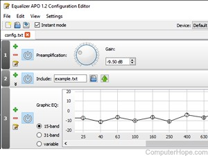

Equalizer APO
Updated: 04/02/2019 by Computer Hope
Equalizer APO is a free, open-source audio equalizer for Microsoft Windows 7, 8, 8.1, and 10. Equalization parameters can be configured for multiple audio devices and applied to all Windows audio. The software features a GUI configuration editor with variable frequency resolution, and the ability to save and load configuration in a text file format.
The source code of Equalizer APO is hosted at SourceForge.